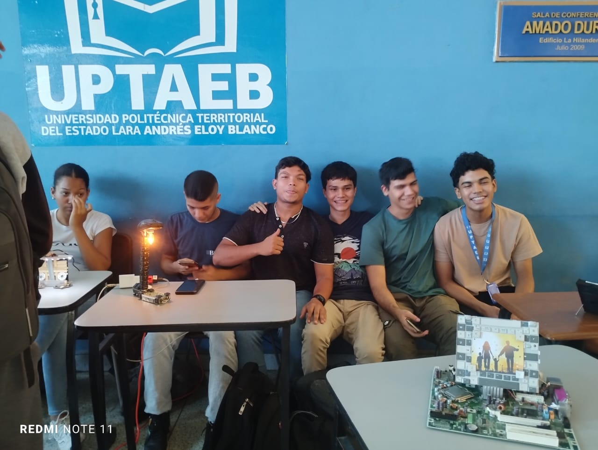
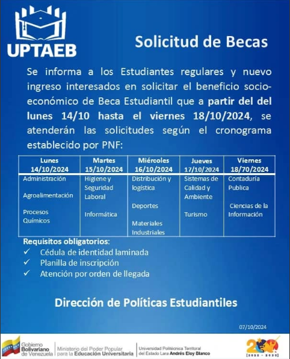
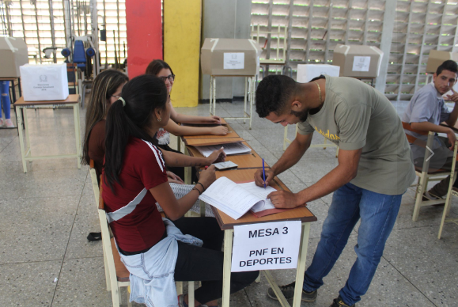

Noticias
Jornada de Arquitectura del PNFI
25/11/24
El 25 de noviembre del 2024 se llevó a cabo la jornada de arquitectura con todos los estudiantes del trayecto uno del PNFI, mostrando sus ingeniosos diseños en el area de arquitectura y robótica, acompañados de los docentes:
Alexis Dorante y Eduardo Venegas
La UPTAEB impulsa la formación en herramientas digitales y tecnología de vanguardia
19/11/24
El Vicerrectorado de Desarrollo Territorial y el PNF en Distribución y Logística de la Universidad Politécnica Territorial del Estado Lara Andrés Eloy Blanco (Uptaeb) te invitan al curso:
Herramientas Digitales y de Inteligencia Artificial para Comercio Internacional
Fecha: Sábado 30 de noviembre de 2024
Hora: 9:00 a.m. - 2:00 p.m.
Ponente: Ing. Edgar Céspedes, Coordinador de Logística de Encoex
Incluye Certificado Digital de Participación
Actos de Grado (Promocion en Honor al Maestro Expedito Cortés)
18/11/24
La Universidad Politécnica Territorial de Lara Andrés Eloy Blanco (Uptaeb) se complace en invitar a la comunidad universitaria y al público en general al acto solemne de graduación correspondiente a la Promoción en Honor al Maestro Expedito Cortés .
XXIX Promoción de TSU en Información y Documentación.
XIII Promoción de TSU en Tecnología de la Producción Agroalimentaria.
XXI Promoción de TSU Informática.👈
📅 Fecha: Martes, 19 de noviembre de 2024.
🕘 Hora: 9:00 am
📍 Lugar: Casa de la Cultura Profesor Aldemo Ceballos, Av. 8 entre calles 14 y 15, sector El Chino, Quíbor, Municipio Jiménez, Estado Lara.
Cambio de Programa Nacional de Formacion
12/11/24
La Dirección de Políticas Estudiantiles informa que el proceso de Cambio de Programa Nacional de Formación (PNF) ya está en marcha.
🗓️ Fecha tope para solicitud y test: 16/11/24
🗓️ Entrevistas: del 18/11/24 al 23/11/24
Para mas informacion haz click aqui👈Taller Organización Métodos y Sistemas
29/10/24
¡Prepárate para mejorar tus habilidades en planificación estratégica! 📈✨ El Vicerrectorado de Desarrollo Territorial y la Dirección de Planificación Estratégica de la UPTAEB invitan al Taller de Organización, Métodos y Sistemas.
Aprende de la mano de los expertos:
🛑MSc. Danny Martínez.
🛑Lcda. Johannir Pérez.
¡Una oportunidad ideal para optimizar tus conocimientos y prepararte para los desafíos profesionales!
Cronograma:
📍Núcleo Morán - Jueves 24/10
📍Núcleo Crespo - Martes 29/10
📍Sede Central - Jueves 31/10
📍Núcleo Jiménez - Viernes 01/11
Solicitud de Becas
16/10/24
Se informa a los estudiantes regulares y nuevo ingreso interesados en solicitar el beneficio socio-economico de Beca Estudiantil que apartir del lunes 14/10 hasta el viernes 18/10/2024, se atenderán las solicitudes según el cronograma establecido por PNF.
Para mas informacion haz click aqui👈 Se renueva el Poder Estudiantil en la Uptaeb
23/11/18
En otra jornada histórica la comunidad estudiantil de la Universidad Politécnica Territorial de Lara Andrés Eloy Blanco ejerció su derecho al voto para elegir su nueva dirigencia estudiantil para el periodo 2018 – 2020.
Desde muy tempranas horas se instalaron nueve mesas que correspondieron a una por cada Programa Nacional de Formación (PNF) hasta el fin del proceso que fue a las 8 de la noche.
Los integrantes de la Plancha número 1 resultaron los ganadores de este evento electoral. Este nuevo Consejo Estudiantil del Poder Popular (CEPP) es una estructura organizativa de mayor participación y protagonismo para los estudiantes pues está constituido por 22 voceros del Comité Ejecutivo, 10 voceros por los PNF más los voceros por cada sección.
Para mas informacion haz click aqui👈 